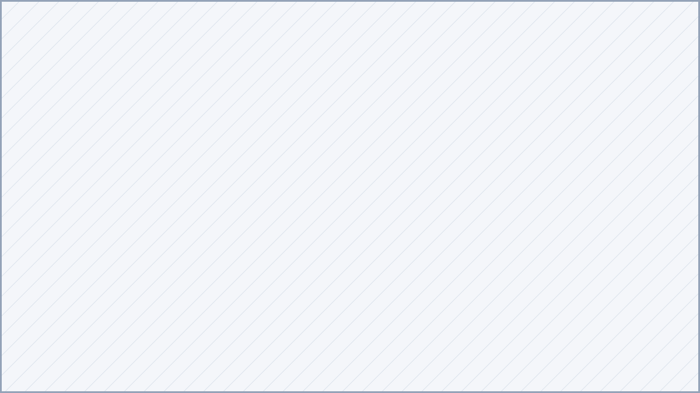

PayU India
Plugin type: Payment · Configured at Countries → edit a country → Payment Gateways
Adds PayU as a payment method for Indian customers. It uses PayU's Payment Links product: SnapBuy asks PayU for a hosted checkout URL and the customer pays on PayU's own page, so no card details ever reach your server.
Install it the way every plugin installs — see Plugins.
PayU is configured on the country, not on the plugin
Gateway credentials are per country in SnapBuy, exactly like Stripe and Razorpay. The Plugins page shows no Settings button for PayU, and its settings page tells you the same. Open Countries → edit the country → Payment Gateways.
Before you start
| You need | Where from |
|---|---|
| A PayU India merchant account | payu.in |
| Client ID and Client Secret | PayU dashboard — the API credentials used to get an access token |
| Merchant ID | PayU dashboard |
| Test credentials first | PayU's UAT environment is a separate set of keys |
Business verification takes time
PayU will not issue live credentials until your documents are approved. Start the account early and rehearse on test keys.
Settings

The card appears among the other gateways once the plugin is installed and enabled. The switch on its header is the per-country on/off.
| Field | Type | What it does |
|---|---|---|
| PayU India switch | Toggle | Offers the method in this country. Off and checkout refuses it. |
| Client ID | Text | From the PayU dashboard. Used to fetch an access token. |
| Client Secret | Password | The matching secret. Never shown again after saving, and hidden in demo mode. |
| Merchant ID | Text | Sent with every Payment Links call. |
| Mode | Select | Test uses PayU's UAT endpoints; Live takes real money. |
| Transaction Currency | Text | ISO 4217 code — INR. Defaults to INR if left blank. |
| Notification URL | Read-only | The address PayU reports back to. Copy it into your PayU dashboard. |
Test and live credentials are not interchangeable
Each mode talks to a different PayU host. Live keys in Test mode — or the reverse — fail at the token step with an authentication error, which reads like a wrong password. Check the mode matches the keys you pasted.
Enable the gateway on every country you sell in
The switch is per country. A gateway configured on India and nowhere else simply does not appear to a customer shopping in another country — see Payment Gateways.
How a payment flows
- The customer picks PayU at checkout.
- SnapBuy asks PayU for a payment link and sends the customer to PayU's hosted page.
- The customer pays there.
- PayU reports back to SnapBuy, which re-confirms the payment with PayU before marking the order paid.
- The customer is returned to your storefront.
The order is settled on the server, not in the app
Whatever the app or the browser does after payment — a lost signal, a force-close, a closed tab — SnapBuy confirms the payment with PayU and settles the order. The front end is where a human pays; it is never the proof that they did.
Every payment is verified against PayU before an order moves
SnapBuy does not trust the message that arrives. It reads the payment back from PayU and compares the amount collected against the amount due, so a tampered or replayed callback cannot produce a paid order. A status PayU does not document is treated as pending, never as paid.
What install adds
No tables and no migrations. Transactions already live on SnapBuy's own tables; the plugin only needs the country's credentials. Uninstalling it leaves your payment history untouched.
| On a PayU order | Value |
|---|---|
| Payment method | payu-india-payment-gateway |
| Transaction label | PayU India |
| Transaction id | PayU's own payment reference — which is what makes a repeated callback harmless |
Paid PayU orders appear in Orders, in the customer's transactions, and in the Payment report alongside every other gateway.
The apps need one release
The plugin ships no app code. Installing it makes PayU available through the API; the Customer App and web portal need PayU's own checkout opened once in their build.
Install it and the method appears — but only where the app can open it
If your app build predates PayU support, the method is returned by the API and the app has nothing to open. Ship the app update alongside enabling the gateway.
Troubleshooting
| Symptom | Cause | Fix |
|---|---|---|
| PayU not offered at checkout | The switch is off on that country, or the plugin is disabled | Check the country card and the Plugins page |
| Payment method not configured | The switch is on but Client ID, Secret or Merchant ID is blank | Fill all three |
| PayU authentication failed | Wrong Client ID/Secret, or keys from the other mode | Re-paste the credentials; check Mode |
| PayU Merchant ID is missing | Only the ID is blank | Fill it in |
| No payment link returned | PayU refused the request — usually credentials or an unapproved account | Check the panel logs and your PayU dashboard |
| Customer paid but the order says pending | PayU has not confirmed collection yet, or the notification URL is not set | Paste the Notification URL into PayU; refresh the order shortly |
| Wrong currency charged | Transaction Currency does not match the country | Set it to the country's ISO code |
| Works in testing, fails live | Still in Test mode, or live keys not yet issued | Switch mode once live keys are approved |
Checklist
- Plugin installed, enabled, licence valid
- Client ID, Client Secret and Merchant ID saved on the country
- Mode matches the keys — Test to rehearse, Live to take money
- Transaction currency set to the country's code
- Notification URL pasted into the PayU dashboard
- The switch on for every country that should offer it
- App and web builds updated to open PayU checkout
- One test payment completed, and one deliberately failed
- One real live payment taken and refunded before launch